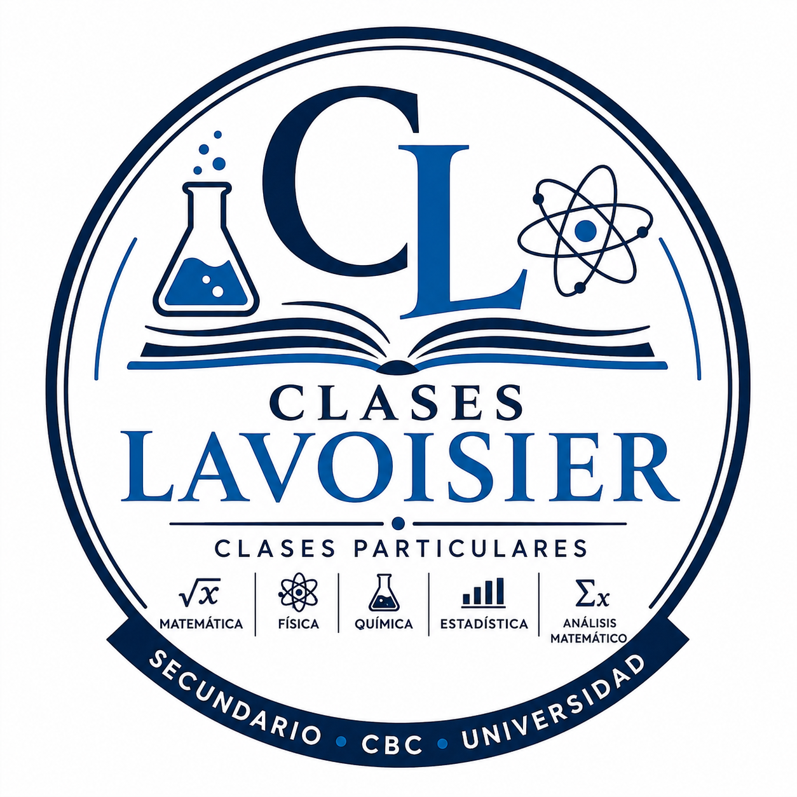

La Física estudia la materia, la energía y las leyes que describen los fenómenos naturales. En esta sección encontrarás teoría, ejemplos y ejercicios organizados por grandes áreas, desde nivel secundario hasta universitario.
Desde nivel secundario hasta universitario.
Movimiento, fuerzas, trabajo y energía.
Hidrostática e hidrodinámica.
Calor, temperatura y gases.
Sonido, luz y fenómenos ondulatorios.
Circuitos, campos eléctricos y magnetismo.